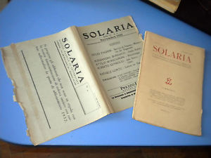
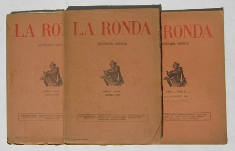
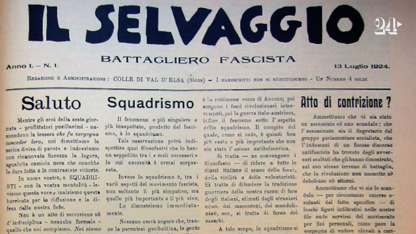
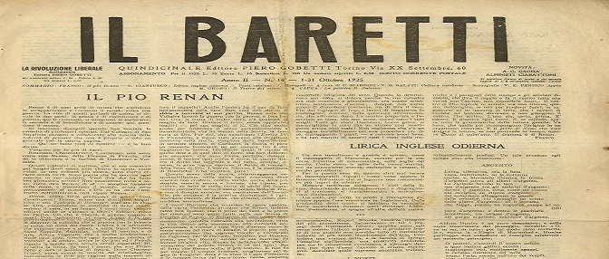
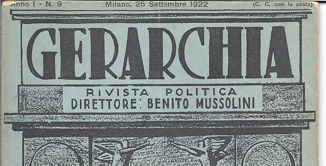

Non si può dire che ci fu una vera e propria "letteratura fascista";
le opere di narrativa sono di livello modesto.
Non mancarono naturalmente voci di dissenso,
ma subirono una dura repressione con la censura.
La cultura fascista si espresse attraverso riviste e correnti
| Rivista | Caratteristiche | |
|---|---|---|
| Solaria |
|
 |
| La Ronda |
|
 |
| Il Selvaggio |
|
 |
| Il Baretti |
|
 |
| Gerarchia |
|
 |